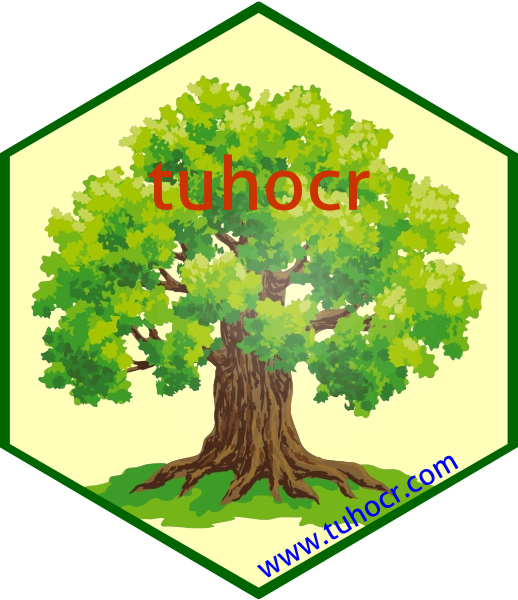

Changelog
Source:NEWS.md
tuhocr 0.1.4
- Sửa function
extract_faostat()để không loại giá trịNA.
tuhocr 0.1.3
- Tạo function
extract_faostat()vàfilter_faostat()để trích xuất dữ liệu cây trồng từ FAOSTAT.
tuhocr 0.1.2
- Tạo function
clean_stata()Làm sạch file Stata (.dta) thành data frame.
tuhocr 0.1.1
- Tạo tutorial
hack1tương ứng https://tuhocr.shinyapps.io/hack1/. Để chạy file này trên RStudio, bạn sử dụng lệnhlearnr::run_tutorial(name = "hack1", package = "tuhocr")
tuhocr 0.1.0
- Tạo function
clean_spss()Làm sạch file SPSS (.sav) thành data frame.